All six modules of the B2B tool; the dashboard pattern shared by three products; the design system
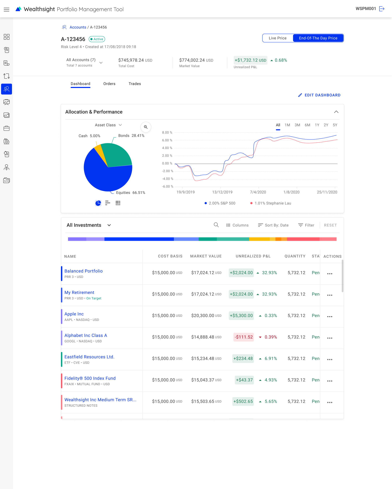
System overview
Six modules, one Wealthsight tool
Wealthsight is the tool banks use to run model-portfolio investing. Portfolio managers create model portfolios from an instrument universe, rebalance client accounts to them, and track the orders and trades that follow. Day to day I designed across the whole tool — wireframes, high-fidelity screens and client demos.
Select a module to jump to its screens. Below: two deep dives — the account dashboard shared by three products, and the model portfolio module — then the design system underneath, and what the work led to.
We were three product designers, one per product. I owned the B2B portfolio management tool. The other two designers worked on a consumer app for banks’ clients and a concept prototype for a project still at the pitching stage. The account dashboard was the one pattern all three products had to share.
The B2B tool, end to end: all six modules, from wireframes to high-fidelity screens and client demos.
The shared dashboard: I planned and facilitated the work with the other two designers, gathered desktop research with them, then did the analysis, summary and final solution, consulting them along the way.
The model portfolio module: redesigned the create flow and the metrics table on the detail page.
The design system: led the rebuild the three products share.
A new product: wrote the research plan the founder asked for after the dashboard work.
02 · Deep dive · Account dashboard
One account dashboard for three products
Problem
The same client-account page had to serve portfolio managers, advisors and individual investors — three products, three designers — with little prior research and a client deadline.
Method
I planned and ran a workshop with the other two designers and we gathered desktop research together. I did the analysis and summary, then checked the concept in a guerrilla walkthrough with 5 colleagues.
Decision
A shared first fold — account summary, allocation and performance, then holdings — on a grid that works on desktop and tablet.
Result
One dashboard pattern for all three products to share. The walkthrough backed the design, and the founder asked me to plan research for a new product.
Led across 3 designers · 1 PM, 3 front-end engineers · 1 month
I planned and facilitated a workshop with the other two designers to pull out the modules the customer, advisor and management tools all share, and we collected desktop research together. I then analysed and summarised the results into what belongs in the first fold, and documented where customer and investment-professional tools need to differ.
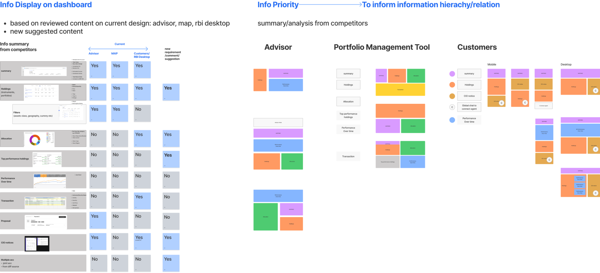
Workshop output: what each tool already showed, then a shared structure for advisor, portfolio-management, and customer surfaces.
Common pattern: account summary, allocation, performance, investment list
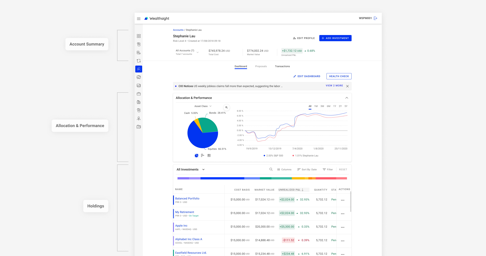
The shared first-fold pattern: account summary, allocation & performance, then the holdings list.
The version we took forward
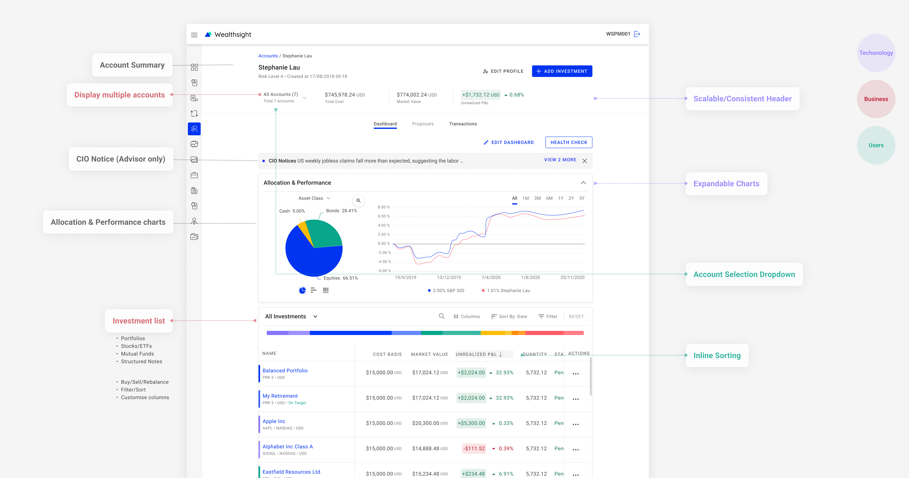
The refined pattern after the walkthrough.Full process: challenges, concept, grid, walkthrough, constraints and prototype
One page, three products
One client-account dashboard, reused across the advisor platform, the individual-investor app, and the portfolio-manager system.
What made a single pattern hard
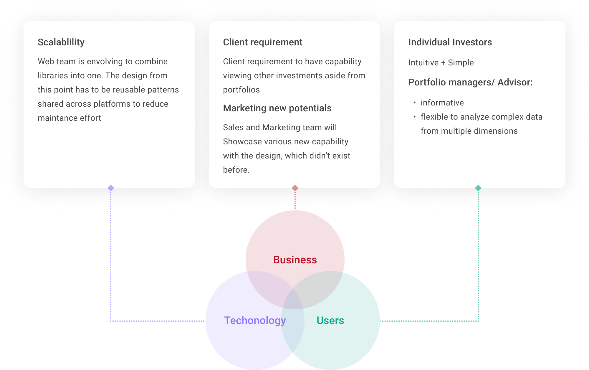
Business, technology, and users pulled the same screen in different directions — scalability, client requirements, and two very different user types.
Incorporate multi-faceted requirements from clients, business value, user experience and technical strategy perspectives. Define a shared design pattern that fit into three different journeys: portfolio management tool, financial advisor and customers.
One pattern for customers & professionals
It is challenging for three designers to agree on one design pattern. Because enterprise users and customers can have totally different goals and focus, this could lead to opposite designs. E.g. to show or hide certain features depends on the frequency of use.
Limited prior research
Because of the timeline to ship the feature to clients — and because some were concepts for a marketing pitch with no existing users asking for them — we had limited knowledge and resources to understand users’ needs and mental models.
Concept & prototype
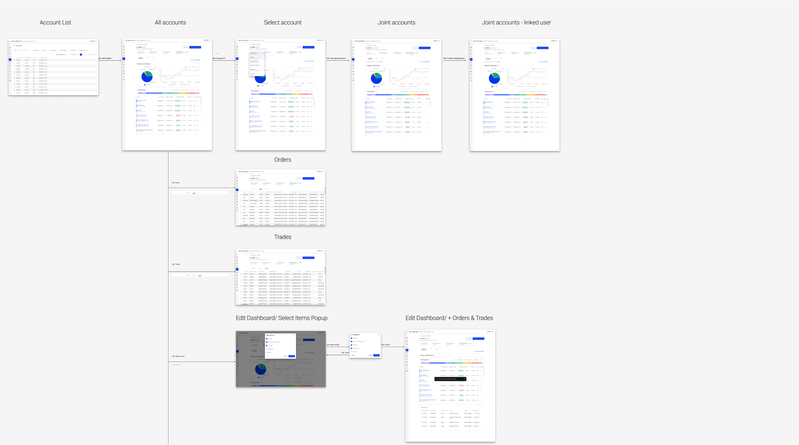
The concept flow we prototyped before locking the visual system.
Responsive grid — desktop & tablet
A grid that holds the same modules on desktop and tablet without rewriting the hierarchy.
A guerrilla walkthrough
To catch basic usability problems quickly, I ran a guerrilla cognitive walkthrough with 5 colleagues, asking them to complete pre-defined tasks with the concept design.
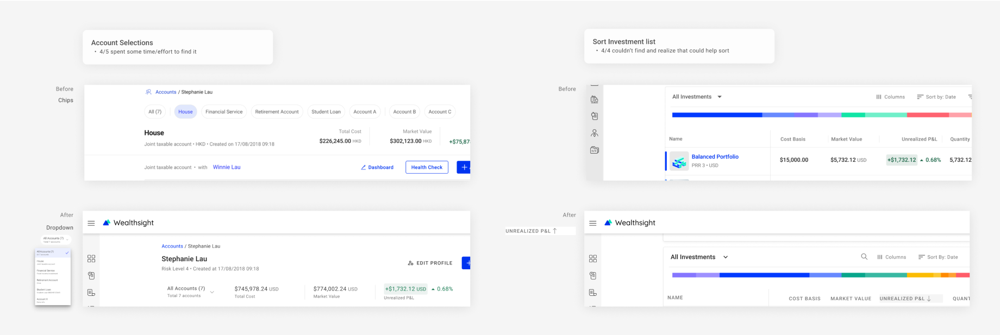
Findings from the walkthrough — enough to catch basic usability issues before we refined the design.
What we could not do, and what we did instead
Unable to define use scenarios without thorough analysis of first-hand data at an early stage — what information to include?
Desktop research
Introduced new design patterns, which might be hard to anticipate most technical issues that may need a design update.
Stay open to iteration
Not able to solidly validate the design with real target users.
Cognitive walkthrough
Click through the dashboard
03 · Deep dive · Model portfolio module
Creating a model portfolio, then reading it
Portfolio managers enter model portfolios here; bank staff then recommend each model to clients whose risk score matches it. I redesigned both ends of the module: the flow that creates a portfolio, and the table that shows how it performs.
1Model portfolio list
2Create a portfolio Part 1
3Open its detail page
4Compare its metrics Part 2
Part 1 · Making creation hard to get wrong
Problem
Creating a model portfolio meant many linked compliance fields, with errors shown only at the end. Even internal staff got confused, and the flow was hard to demo to prospective clients.
Method
With no access to users, a heuristic evaluation against Nielsen’s 10 heuristics, a platform audit, and interviews with the product owner and engineers.
Decision
Split creation into 4 steps with a stepper, mark required fields, and validate linked fields step by step. Regroup the view page so managers find what they came for.
Result
After launch, clients raised no complaints about the flow, and the company onboarded a new client — not credited to this redesign alone.
Before: required fields only revealed on submit, linked fields with no cue, locked fields that looked editable, and a detail page that needed a long scroll.
Prevent errors up front
Many fields are interlinked, and learning that from an error popup at the end is frustrating. Make the prerequisites visible before people need them.
Efficient navigation, less distraction
Portfolio managers arrive with a clear target. Let them get to the information they want quickly.
A flexible journey, not a fixed line
People come to this page for different reasons, so they need more than one way to move through it.
Refined design: creation
Four steps with a stepper; required fields marked; linked fields grouped into their own step so each is validated before moving on.
Refined design: view page
The view page split into info, current composition and draft composition, each with its own performance view.Full process: audit, wireframes, information architecture and prototype
Audit, mapping and desktop research
I audited the existing platforms, interviewed the product owner and technical team to understand the logic and constraints, and reviewed the solution with product and front-end to weigh business value and feasibility.
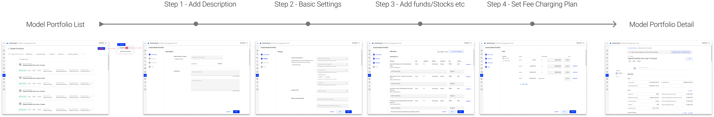
Wireframes: creation
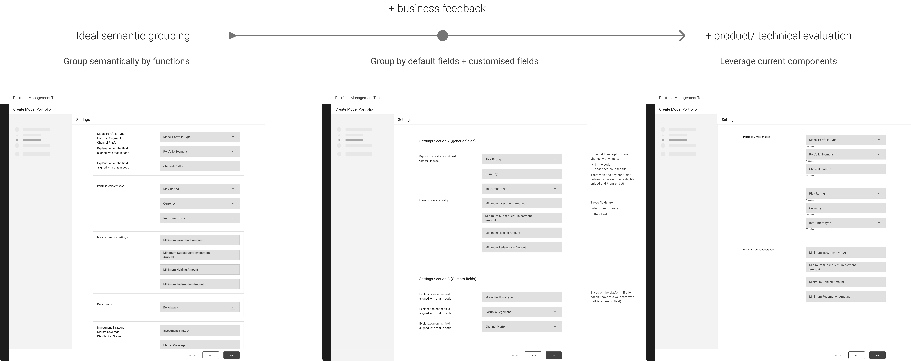
Information architecture: view page
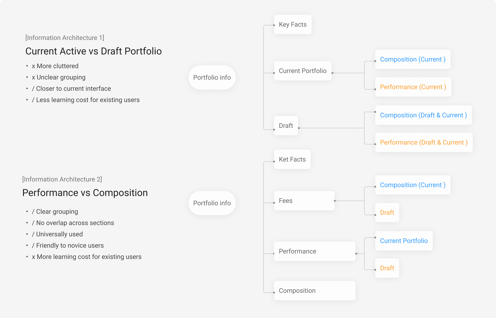
Two ways to organise the view page, with the trade-offs of each for new and existing users.
Interactive prototype
Part 2 · Testing 4 layouts for the metrics table
Problem
On the detail page, managers were getting the option to add instruments and benchmarks to the performance view, so one table had to compare several portfolios across returns, volatility, Sharpe and Sortino over seven time periods.
Method
Research access was limited, so I ran a comparative usability test with 5 colleagues. Three variables — colour coding, which axis holds the portfolios, tabs or a dropdown — became 4 layouts. Testers rated each for ease of comparison (1–5), some in reversed order, then explained their scores in follow-up interviews.
Decision
Option 2: colour-coded rows, portfolios down the side and time periods across the top, with tabs to switch metric.
Result
Option 2 scored highest (32, against 25, 23 and 18). 3 of 5 interviewees said it worked like the spreadsheets they already use.
Sole designer · comparative usability test with colleagues
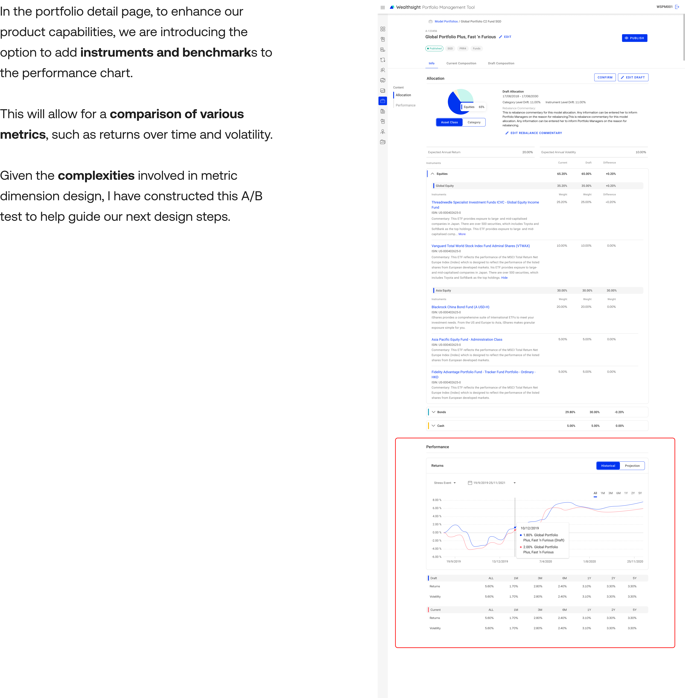
Where the table lives: the performance section of a model portfolio’s detail page.
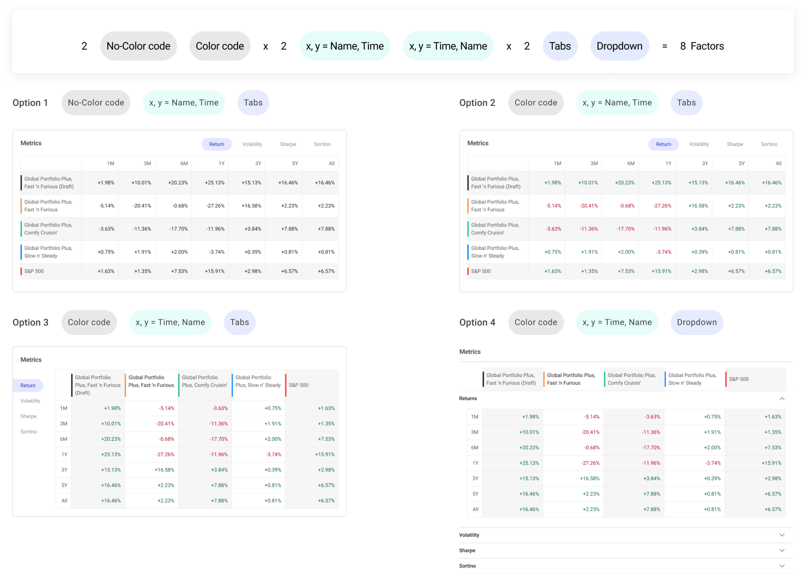
2 × 2 × 2 variables, tested as four layouts.
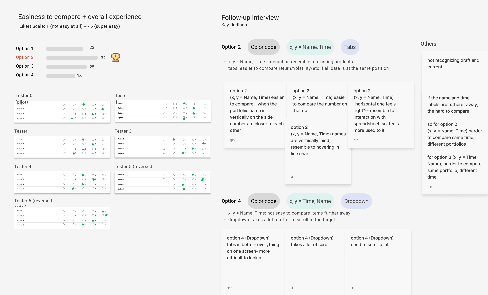
Scores per tester, and why: names down the side matched the line-chart tooltip and spreadsheets; the dropdown meant too much scrolling.04 · Other modules
Model portfolios, instruments, rebalance, orders and trades
The rest of the tool covers what happens after a portfolio manager decides to act. These screens are built from the same design system, so dense tables, filters and status patterns behave the same everywhere.
Model portfolios
Portfolio managers maintain a library of model portfolios that client accounts follow.
Each card surfaces the facts needed to pick a model: risk level (PRR), currency, instrument type, benchmark and publish status.
Latest publish and rebalance dates sit side by side, so stale models are easy to spot.
Model portfolio library, filterable by publish time, instrument type, currency, risk level and segment.
Instruments
The instrument universe that model portfolios are built from.
Each row pairs the instrument name with its ISIN, asset class, category and benchmark.
Asset class can be edited in place, with the original classification kept underneath for reference.
Ten filters — watchlist, category, benchmark, type, currency, asset class, complexity, risk, segment and channel — narrow a long list quickly.
Instruments: searchable by ISIN or name, with watchlist and export.
Rebalance: review the buy/sell list before submitting
A rebalance can touch many model portfolios at once. The buy/sell list turns that batch into something a portfolio manager can check before any order is created.
Left column lists every model portfolio affected by the current filter (here 12 of 20), so the scope of the batch is visible up front.
For each instrument the table shows weight before, after and the difference, with the resulting Buy, Sell or N/A action.
Sells and buys are colour-coded and cash is shown as its own line, so the net effect is readable at a glance.
Focus rebalance: the buy/sell list for each model portfolio, reviewed before moving on.
Orders: track status and catch exceptions
Every buy, sell and rebalance instruction lands in the orders table, where operations and portfolio managers follow it to completion.
Order status (Pending, Complete, Error, Disable) sits next to the action, so failed orders stand out in a long list.
Each row links the order to its account, trading account, model portfolio, order ID and creation time.
Filters for action, status, model portfolio, date, creator and account, plus expandable rows and full export for reconciliation.
Orders: status-first table with filters and export.
Trades: notional and reconciliation
The trades view records the outcome of each order instruction, so teams can reconcile it.
Rows carry action, account code, trading account, group code, model portfolio, notional and order instruction ID.
Reconciliation status and portfolio segment filters help teams find trades that still need checking.
Trades: trade records with notional and reconciliation filters.05 · Foundation
One design system under three products
Problem
Colours missed WCAG contrast, type sizes had drifted, and design and front-end used different names for the same things.
Method
Audited existing patterns across the product, ran feedback sessions with designers and the web team, then structured workshops on how to use the system.
Decision
Start from Material Design, use it flexibly, and keep one pattern library across all three products. A simple rule for every new screen: reuse a component, adjust it, or create and document a new one.
Result
New modules were assembled from existing components. Updated components were shared through a monthly design × web meeting and a shared channel.
Led the rebuild · 3 designers, 5 front-end engineers
Style guide: contrast and type
I updated colours to meet WCAG contrast, refined font sizes from designer and web-team feedback, and aligned naming with the front-end so a style in Figma had the same name in code.
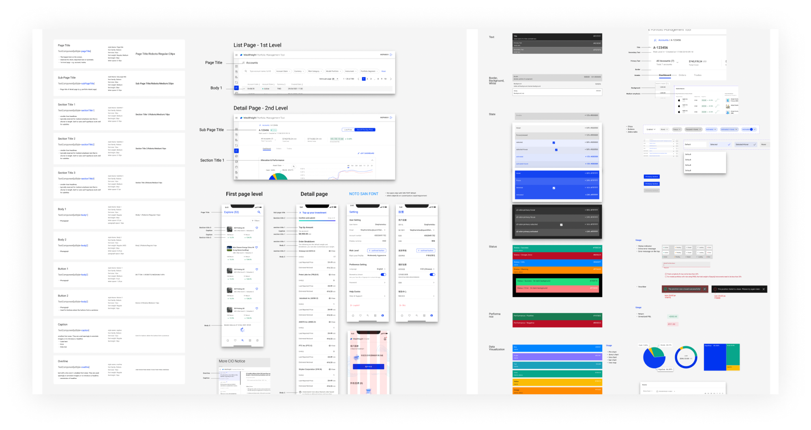
Type levels mapped to real list and detail pages, plus colours, statuses and the chart palette.
Guidelines: when to confirm, when to undo
Components came with rules for when to use them. A confirmation box is only worth the interruption when an action is irreversible, severe, complex and rare; everything else gets an undo toast.
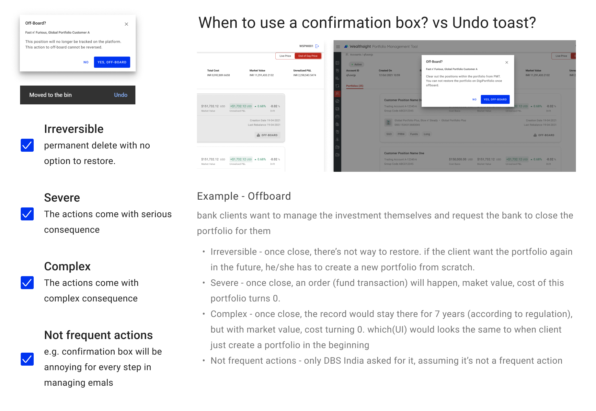
Off-boarding a client portfolio meets all four tests — it can’t be restored, it triggers a fund transaction, and the record stays for 7 years — so it gets a confirmation box.More from the design system: components, writing guide, grid, and how we ran it
New components
Modals, chips, breadcrumbs, scrollspy and snackbar, added where products kept building their own versions.
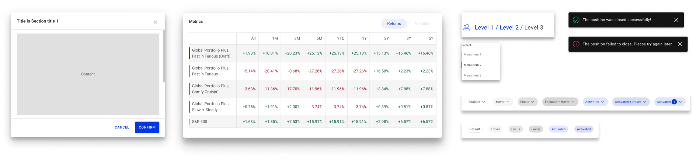
UX writing guide
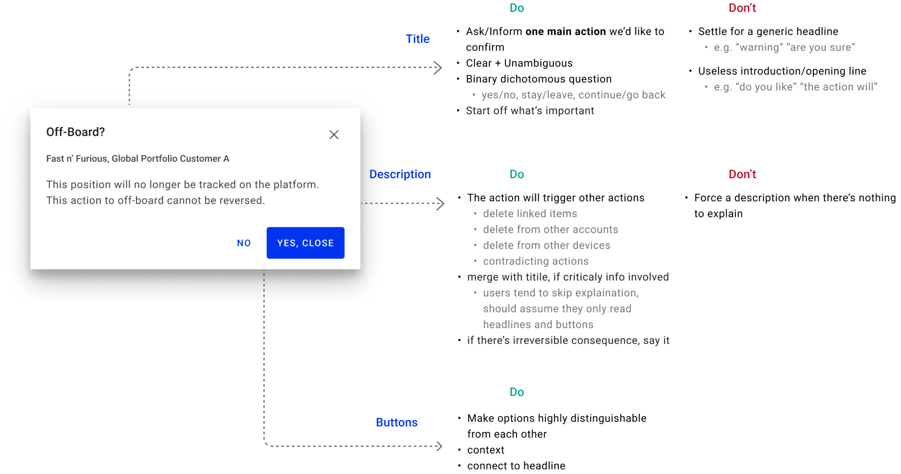
Dialog copy: one clear question in the title, consequences in the description, buttons that echo the title.
Grid
A grid tailored to the platform’s layouts and task priority.
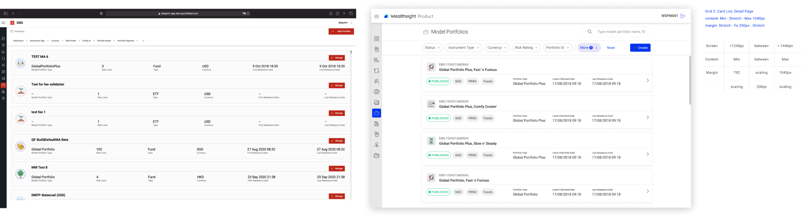
Usage guide and decision path
I ran structured workshops with developers and designers to agree goals and process, then wrote them up as a usage guide.
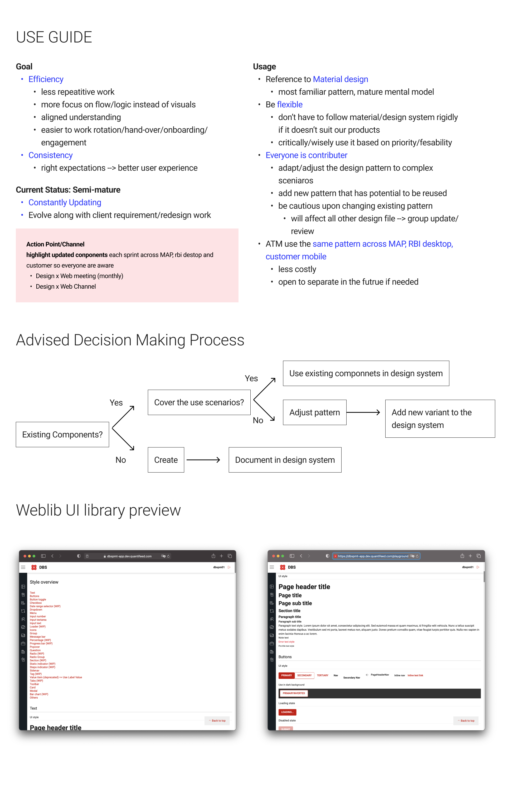
Goals, principles and the reuse → adjust → create decision path, with the live web UI library.
Pattern audit
A product audit grouped every dialog by job — selection, edit, tooltip, input, upload, confirmation — so we could standardise each pattern and review it regularly.
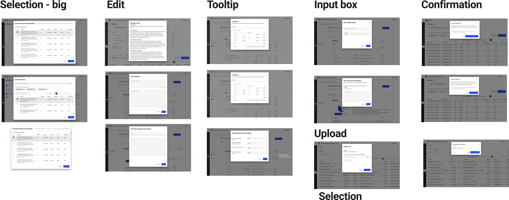
06 · What it led to
From evidence on small decisions to planning a new product
Across these projects I backed design decisions with whatever evidence I could get: a guerrilla walkthrough for the dashboard, a heuristic evaluation for creation, a comparative usability test for the metrics table. When I presented the dashboard and its walkthrough results, the founder asked me to plan the research for a new product — what advisors need, what to build, and in what order.
Research
With the product manager, I interviewed 5 financial advisory directors, mostly from Swiss investment banks, recruited through the founder’s network.
Synthesis
I mapped their journey, pain points and the features a new tool would need.
Next
I wrote a feature-prioritisation workshop plan and a prototype-testing plan. I left before either was run.
Research lead · with 1 PM
The research plan
Interview findings: journey map, persona and next steps